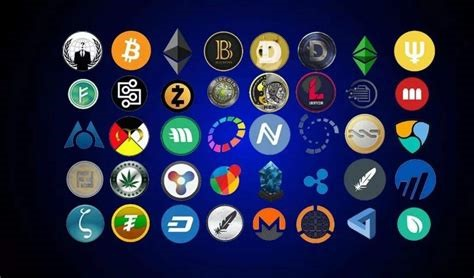

In the modern day and age, with a fluctuating sense of financial security across a good portion of the world, it is important to understand potential options available to function as a store of value. You hear about cryptocurrency everywhere, mostly in terms of a bad investment. However, there are several countries with a currency so badly inflated or effectively worthless that for them cryptocurrencies are more than a viable option.
There are a number of ways to purchase and obtain different tokens, but first things first you need somewhere to purchase your first, meaning you need access to an exchange. There are a number of options that are good, but this changes depending on your state and the respective laws surrounding certain exchanges. Do your own research as to what options are available to you. Once you’ve got access to an exchange, you can choose to use the exchange itself to store your currency, a hardware wallet, or a digital wallet. I would advise against using the exchanges themselves to store your coins, as proven relatively recently by a certain exchange operating out of the Bahamas. Digital wallets are free to create, as long as you have the device to use it on, they are viable if you adhere to keeping that information secure. Finally, the hardware wallet is the most secure of any option, as not only do you need the password, but you also need the device, meaning if you lose it, it’s gone forever. However, I will go over the basics of how to create a simple digital wallet that anyone can create and effectively store their currency, and all you need is access to chrome. There are a number of options with their own benefits/drawbacks, but I will be going over creating a MetaMask digital wallet.
